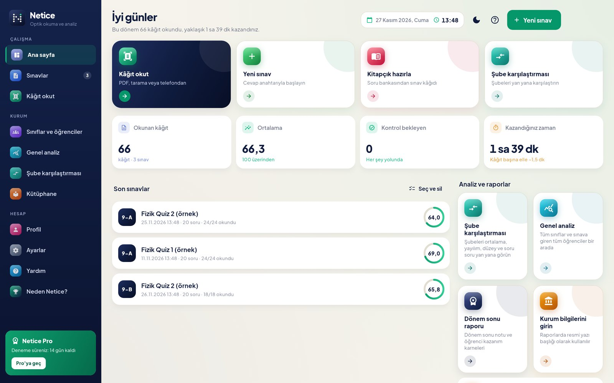
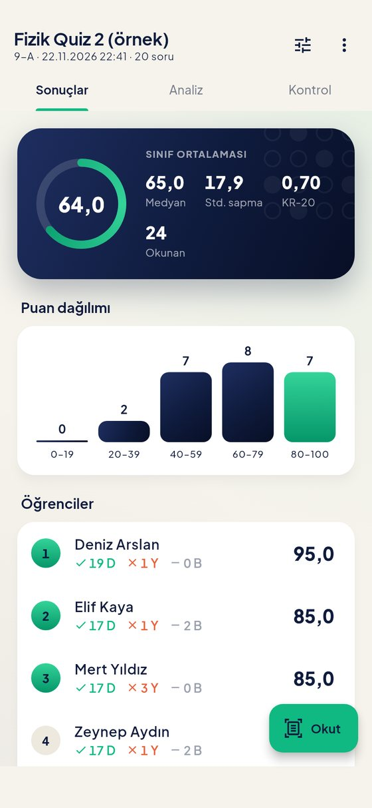
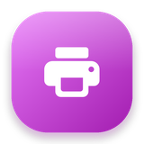
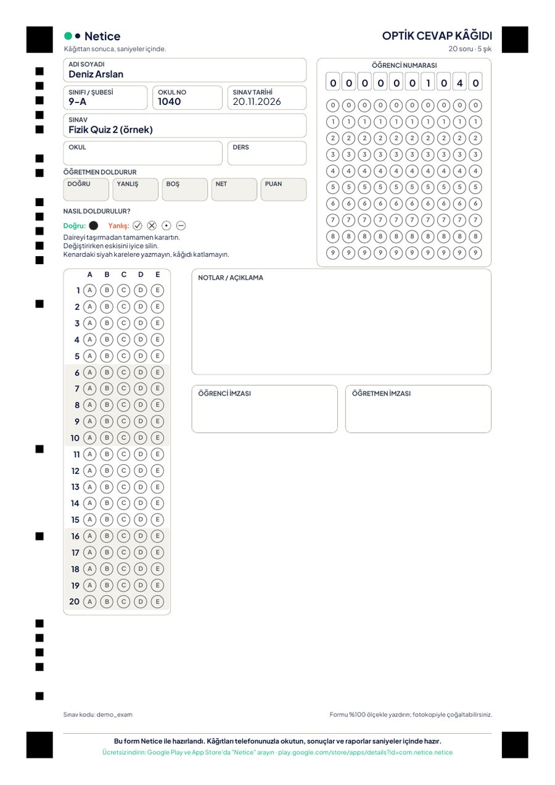
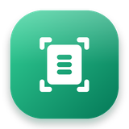
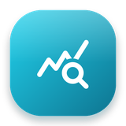
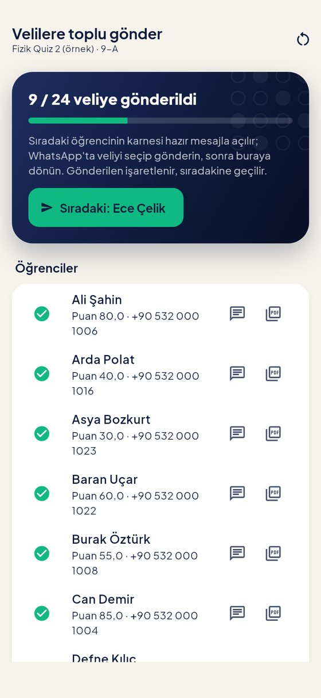
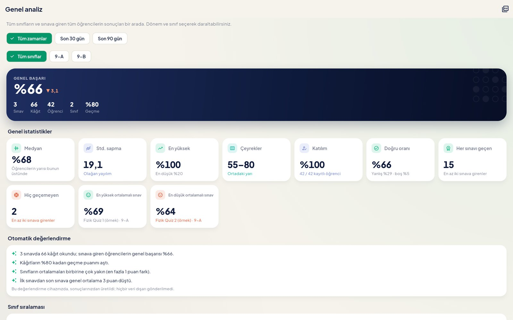
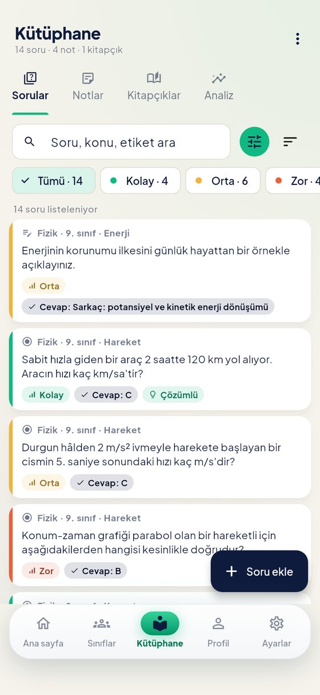

Kâğıttan sonuca, saniyeler içinde.
Netice, optik formları telefonunuzun kamerasıyla ya da tarayıcıdan okur; puanı, neti, konu analizini ve karneyi anında hazırlar. Sınav kitapçığınızı da kendi soru bankanızdan dakikalar içinde oluşturur.


Netice'yi bir dakikada tanıyın
Üç adımda sınavdan karneye
Ayrı bir optik okuyucu cihaz ya da özel kâğıt gerekmez. Formu her yazıcıdan basabilirsiniz.

Formu yazdırınNetice optik formunu A4'e basın. Kısa quizler için bir sayfaya dört form sığar. Form, sınavı ve öğrenciyi kendi makine koduyla tanır.


Telefonla okutunKamerayı forma tutun; Netice kâğıdı bulur, düzeltir ve okur. Gölgeli, eğik ya da buruşuk kâğıtlar sorun değil. Bilgisayarda taranmış PDF'leri toplu okur.


Raporu paylaşınPuan, net, sıralama, soru ve kazanım analizi hazır. Resmî başlıklı raporu yazdırın, karneleri velilere hazır mesajla gönderin.

Okumanın ötesinde, sınavın her aşaması

Soru bankası
Kendi sorularınızı, konu özetlerinizi ve hap bilgilerinizi ders, konu, kazanım ve zorlukla etiketleyip tek yerde toplayın.

Kitapçık oluşturucu
A'dan H'ye kitapçık türleri, karışık soru ve şıklar, hazır cevap anahtarı. PDF ya da düzenlenebilir Word olarak kaydedin.

Derin analiz
Soru güçlüğü, ayırt edicilik, KR-20 güvenilirlik, konu ısı haritası, sınıf sınıf karşılaştırma ve erken uyarı listesi.
Nottan soru üretme
Yapay zekâ ders notunuzdan soru önerir; siz kontrol eder, bankanıza eklersiniz. İlkokul için çocuk dostu kitapçık şablonu da var.

Veliler ve meslektaşlar
Bütün sınıfın karnesini hazır mesajla velilere sırayla gönderin. Ortak sınav sonuçlarını aynı Wi-Fi'da internetsiz toplayın.
Gizlilik önce gelir
Hesap açmanız gerekmez, uygulama internetsiz çalışır, veriler cihazınızda kalır. Sizi izleyen reklam ağı yoktur.
Her kurum, her ülke
Rapor başlıkları kurum türüne ve ülkeye göre kendiliğinden düzenlenir: T.C. Kaymakamlığı başlığından üniversite fakültesine kadar.
Büyük ekranda bütün sınıf tek bakışta
Bilgisayar sürümü taranmış optik formları toplu okur, raporları geniş ekranda gösterir. Telefon ve bilgisayar arasında yedek dosyasıyla ya da aynı Wi-Fi üzerinden veri taşıyabilirsiniz.




Okuma ücretsiz, Pro 14 gün sizde
Okuma, soru bankası ve temel raporlar her zaman ücretsiz. Dönem raporu, karneler, A–H kitapçık ve velilere gönderim gibi Pro özelliklerini ilk 14 gün kart bilgisi vermeden kullanın.